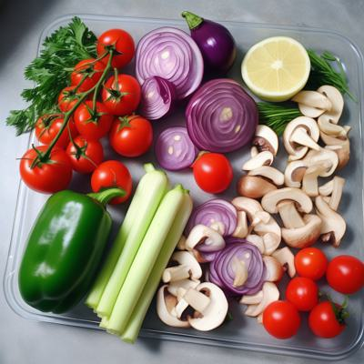
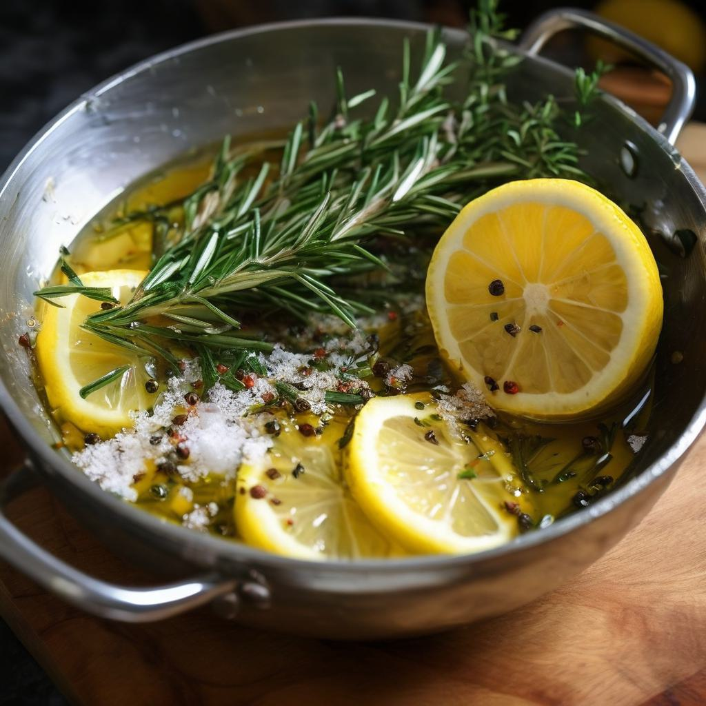
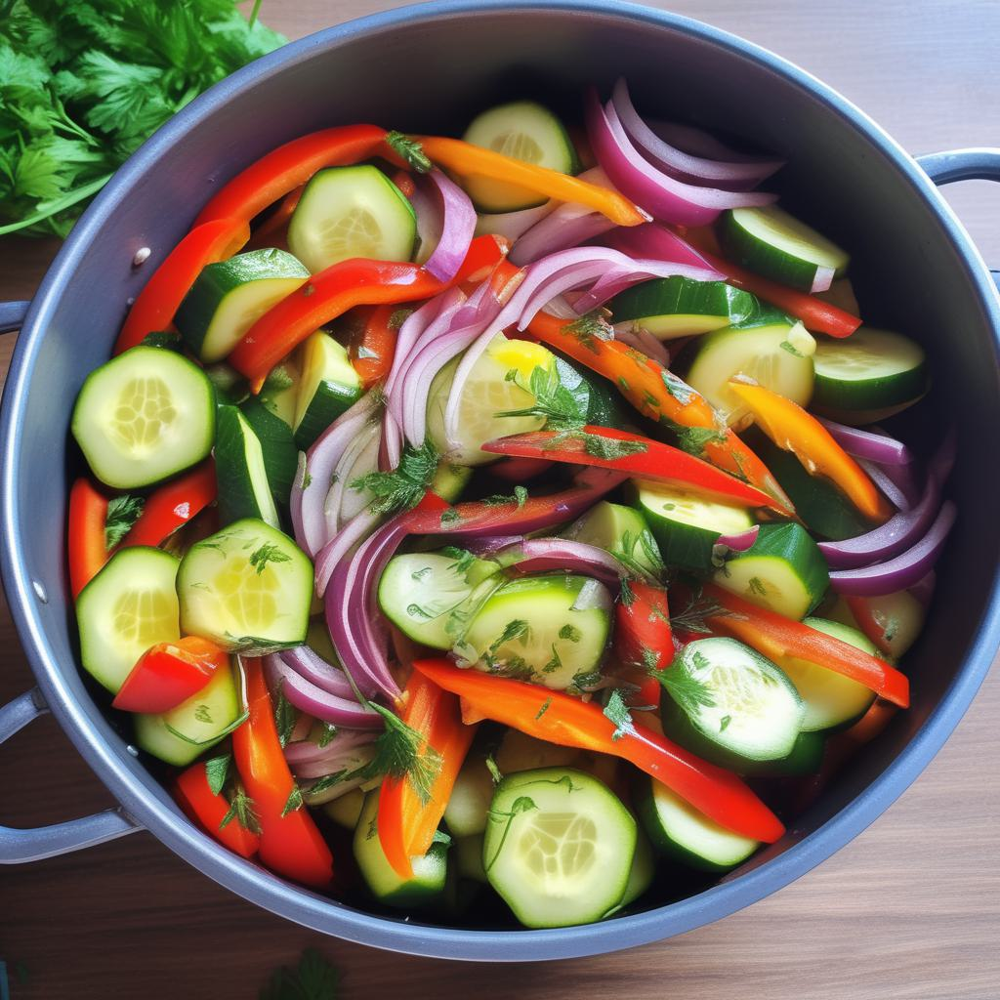
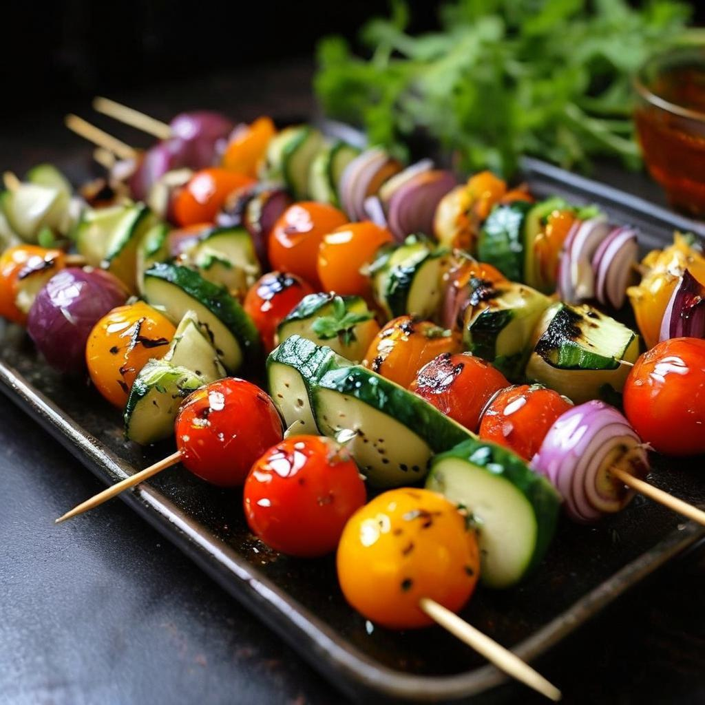
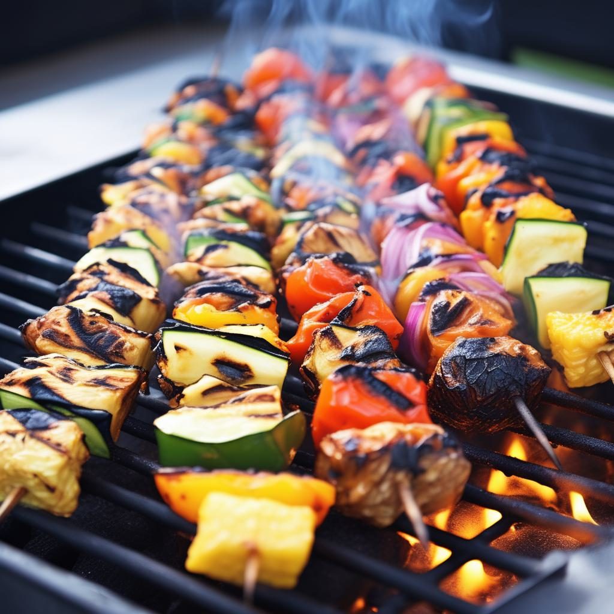

- ### Шаг 1: Подготовка овощей
1. Нарежьте помидоры, перец, кабачок и лук крупными кусками, подходящими для нанизывания на шампуры.
2. Почистите шампиньоны и оставьте их целиком или нарежьте пополам.

- ### Шаг 2: Приготовление маринада
- В миске смешайте оливковое масло, соль, перец, лимонный сок и по желанию добавьте розмарин для аромата.

- ### Шаг 3: Маринование овощей
1. Положите нарезанные овощи в миску с маринадом, хорошо перемешайте, чтобы овощи покрылись маринадом.
2. Оставьте овощи мариноваться в холодильнике на 30-60 минут.

- ### Шаг 4: Нанизывание овощей на шампуры
1. Нанизывайте овощи на шампуры, чередуя различные виды овощей для красивого вида.
2. Можно добавить кусочки лука между овощами для большего аромата.

- ### Шаг 5: Жарка овощного шашлыка
1. Разогрейте гриль или угли до средней температуры.
2. Выложите овощные шашлыки на гриль и жарьте до готовности, переворачивая время от времени, пока овощи не станут мягкими и ароматными.
- ### Готово!
Подавайте овощной шашлык горячим с зеленью, лимонным дипом или любым соусом по вашему выбору.
Приятного аппетита!